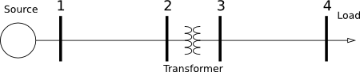

This package contains models for the IEEE 4 nodes test feeder
This package contains examples that shows the validation of the models against the IEEE four-nodes test feeder validation procedure . The tests that are part of the validation certify the capability to represent transformers of various configurations, full three-phase lines, and unbalanced loads.

The figure shows the structure of the four-nodes network. The voltage source is connected to the load through two lines and a transformer. The validation procedure consists of mutliple tests in which the type of the load and the type of the transformer vary. The test cases that have been successfully implemented using the models of the Buildings.Electrical package.
Each example in this package is part of the validation tests. The examples have been grouped into sub-packages depending on the characteristics of the validation test. The table below summarizes the examples that are part of this package.
| Transformer | Load |
|---|---|
| Gr Y - Gr Y Step Up | Balanced |
| Gr Y - D Step Up | Balanced |
| D - D Step Up | Balanced |
| Gr Y - Gr Y Step Down | Balanced |
| Gr Y - D Step Down | Balanced |
| D - D Step Down | Balanced |
| Gr Y - Gr Y Step Up | Unbalanced |
| Gr Y - D Step Up | Unbalanced |
| D - D Step Up | Unbalanced |
| Gr Y - Gr Y Step Down | Unbalanced |
| Gr Y - D Step Down | Unbalanced |
| D - D Step Down | Unbalanced |
For example Gr Y - D Step Up indicates that the transformer has a grounded Y connection at the primary side, and a D connection at the secondary side. Step up indicates that the voltage at the secondary side is higher than the primary side. Each test listed in the table produces results that differ from the reference IEEE values by less than 0.05%, which is the threshold defined by IEEE to determine whether results should be accepted or not.
Kersting, William H.
Radial distribution test feeders
Power Engineering Society Winter Meeting (2) p. 908-912, 2001. IEEE
Extends from Modelica.Icons.ExamplesPackage (Icon for packages containing runnable examples).
| Name | Description |
|---|---|
| Package that contains the examples for balanced loads and step down transformer | |
| Package that contains the examples for balanced loads and step up transformer | |
| Package that contains the examples for unbalanced loads and step down transformer | |
| Package that contains the examples for unbalanced loads and step up transformer | |
| This package contains the base classes used by the IEEE 4 nodes test feeder |